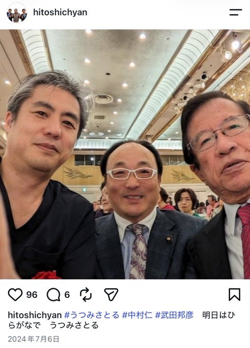

失職ではく、選挙に出るために自己都合退職したということ？どこまで本当かわからないが、この裁判は罰金のように課される利率を下げるぐらいしか勝ち目なさそう。



知念実希人【公式】
@MIKITO_777
これ、原告は報道によると
『2022年12月にA氏の父が失職。A氏は零細の学習塾を経営する母や、就労困難な自閉症の弟、さらに妻子を養わなければならなくなった』
と経済的な困難を訴えているらしいけど、 x.com/yukky115/statu…